重點摘要
這是整個影像診斷學的第一堂課，主線是「X光片是怎麼形成的、為什麼會長這個樣子」。先從X光管如何產生X光講起，再看X光進入病患身體後如何與組織交互作用（主要是光電效應）——這條交互作用決定了底片上黑白對比的來源。接著整理影響影像對比度的因素（組織的物理密度、原子序、厚度、X光能量），這些是判讀任何一張X光片前都要先懂的物理背景。最後兩個大主題是臨床實際操作最常用到的：X光片身為「二維影像」天生的五個限制（放大變形、不熟悉的影像、失去深度感、疊加訊號、輪廓消失效應）解釋了為什麼同一個病灶在不同投照方向看起來不一樣；標準攝影投照與擺位則是臨床上真正動手拍片時，怎麼命名投照方向、怎麼選擺位、怎麼避免干擾物遮擋病灶的實務知識。點下方任一分類可直接跳到該小節。
X光管、mA／kVp
密度／原子序／厚度
五個判讀陷阱
DV/VD、CrCd/CdCr
- X光管靠「高速電子撞擊金屬靶（鎢靶）」產生X光：熱陰極燈絲加熱釋放電子、經高電壓加速撞擊旋轉陽極的鎢靶，產生X光；mA決定電子數量（燈絲電流）、kVp決定電子加速電壓（X光能量高低）、mAs是X光管實際輸出的總輻射量。
- 光電效應（photoelectric absorption）是形成影像的主要交互作用機轉：X光被組織完全吸收，吸收量與原子序的三次方成正比（Z³，如骨骼12.3遠高於脂肪6.5）、與光子能量的三次方成反比（1/E³）——kVp越高，光電吸收越少，組織間對比度越低，這是選擇kVp時「對比 vs. 穿透力」取捨的物理基礎。
- 準直儀（collimator）限制主要射束範圍，避免非必要輻射造成：病患劑量增加、底片起霧（fogging）使影像品質下降、旁觀者輻射暴露增加——是輻射防護的第一道關卡。
- 影像對比度取決於四個物理因子：物理密度差異、原子序差異、厚度差異、X光能量（kVp）；體液（血液、尿液、膽汁、CSF、滲出液）與軟組織（軟骨、肌肉、筋膜、肌腱、韌帶、器官）因密度與原子序相近，在X光片上統稱同一種「軟組織不透光度（soft-tissue radiopacity）」，無法互相區分。
- 厚度增加會使該部位不透光度增加（即使物質相同）；kVp設定過低會使X光穿透不足、影像曝光不足；kVp過高則穿透過多、影像曝光過度，需依部位厚度與特性（如是否有運動）決定kVp與mAs。
- 二維影像的五個先天限制是判讀X光片最重要的思維框架：①放大變形（物體離底片越遠放大率越高，感興趣構造應盡量靠近底片，但肺部病灶例外——邊界可能被萎陷的依賴側肺組織所掩蓋）②不熟悉的影像（去掉深度資訊後的疊加投影）③失去深度感（無法判斷病灶前後位置，需搭配另一投照方向）④疊加訊號（summation sign，正向或負向疊加取決於疊加構造的吸收程度）⑤輪廓消失效應（silhouette effect／border effacement，相同不透光度的構造相接觸時邊界消失，被不同不透光度的物質分隔則邊界可辨識）。
- 投照方向依X光進入到穿出病患身體的方向命名：DV（dorsoventral，腹側朝下）／VD（ventrodorsal，背側朝下）；CrCd（craniocaudal）／CdCr（caudocranial）；外側位（lateral）依病患躺臥側或站立時靠近底片的一側命名（右外側位＝右側躺臥）；同一部位至少需要互相垂直的兩個投照方向才能完整評估。
- 標準擺位極其重要：擺位不正（如VD歪斜）會使脊椎偏移中線、心臟輪廓失真，直接影響判讀準確性；拍片時須盡量排除外來干擾物（項圈、氣管內管、監測設備導線、手指）與病患自身構造（肢體、肩胛骨、皮膚皺褶）與感興趣部位重疊；需要標準化的解剖學方位術語（rostral/caudal、cranial/caudal、dorsal/ventral、palmar/plantar、proximal/distal）才能精確描述投照方向與病灶位置。
X光的產生 Production of X-ray
理解X光管的構造與mA／kVp／mAs三個參數的意義，是後續所有「怎麼選擇曝光條件」討論的起點。
X光管 X-ray Tube重要
高速電子撞擊金屬靶 → 產生X光：熱陰極燈絲（hot cathode filament）通電加熱後釋放電子（電子束），經高電壓（示意圖中約100,000 V）加速射向旋轉陽極（rotating anode）上的鎢靶（tungsten target），電子撞擊鎢靶產生X光；陽極持續旋轉（由stator／rotor馬達驅動）以分散撞擊產生的高熱、避免靶面局部過熱損壞。
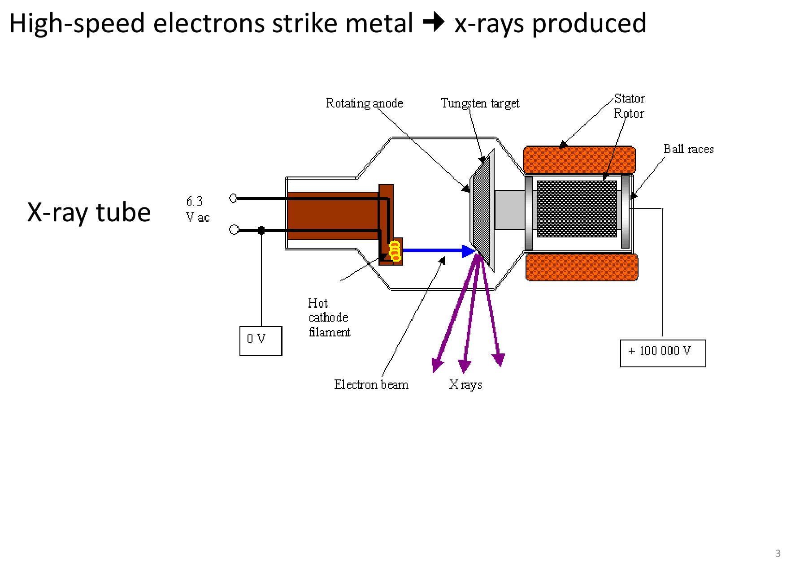
mA、mAs、kVp 三個核心參數重要
Milliamperage，通過燈絲的電流大小，決定電子數量
Milliampere seconds，X光管實際產生的輻射總量
Kilovoltage peak，陽極與陰極間的電壓差——kVp越高，電子被加速到越高速度，產生的X光能量越高
輻射與物質的交互作用 Interaction of Radiation with Matter
光電效應是形成X光影像的核心機轉，它的兩個比例關係（與原子序三次方成正比、與光子能量三次方成反比）直接解釋了組織對比度從何而來。
光電效應 Photoelectric Effect（Photoelectric Absorption）重要
X光與物質交互作用的機轉很多，但光電效應是形成影像的主要交互作用機轉：X光射向病患後被完全吸收，吸收該部位的X光就不會到達底片，因此該部位在底片上曝光量較少（影像較白／不透光）。
Z＝原子序（atomic number）。例：脂肪 6.5、骨骼 12.3、鉛 82.0——原子序越高的組織，光電吸收越強，影像上越不透光（越白）。
E＝光子能量（與kVp相關）。↑X光能量（kVp）→ ↓光電吸收 → ↓組織間對比度——這是為什麼過高的kVp會讓影像看起來「灰灰的、對比度不足」的物理原因。
攝影基本概念 Basic Concepts of Making a Radiograph
從X光管到底片之間，準直儀限制了射束範圍、底片上的黑白深淺則直接反映了到達底片的X光量，這兩個環節構成攝影室裡實際操作的基礎。
攝影基本架構
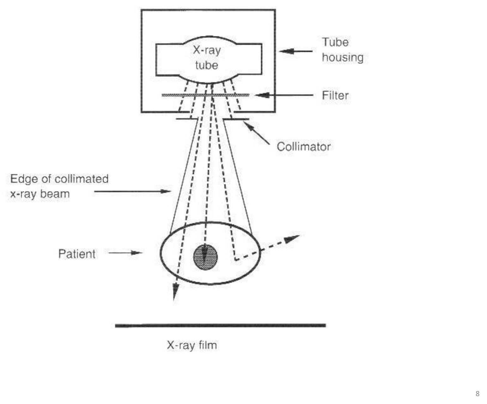
準直儀／準直 Collimator / Collimation重要
功能：限制主要射束（primary beam）範圍，避免非必要輻射（non-useful radiation）離開X光管housing。
- 增加病患輻射劑量
- 因起霧（fogging）而降低影像品質
- 增加旁觀者（bystanders）的輻射暴露
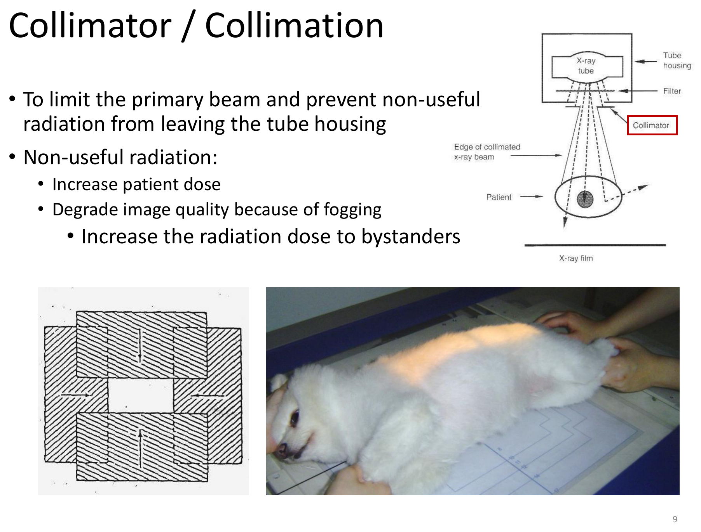
底片黑化度／不透光度 Film Blackness / Opacity
底片變黑的程度與到達底片該部位的X光數量直接相關：
- ↑X光機輸出（mAs）→ ↑打到底片的X光數量 → ↑底片黑化程度
- ↓光電吸收（kVp較高）→ ↑到達底片的X光曝光量 → ↑底片黑化程度
底片原理：X光片是含鹵化銀（silver halide）的感光乳劑，X光或可見光使鹵化銀感光（sensitize）→ 經底片沖洗（film processing）→ 產生銀沉積（silver deposits），在沖洗完成的底片上呈黑色。
影響對比度的因素 Factors Affecting Contrast
組織間能不能在X光片上被區分開來，取決於物理密度、原子序、厚度與X光能量四個因子的組合，這節把每個因子拆開來看。
放射對比度取決於重要
受壓力、溫度、光線、時間影響（底片本身的物理／化學特性與沖洗條件）
降低影像清晰度與對比度的干擾因素
主體對比度（subject contrast）受下列因素影響：
- 物理密度差異（physical density）
- 原子序差異（atomic number）
- 厚度差異（thickness）
- X光束能量（kVp）
各物質物理密度與原子序重要
| 物質 | 物理密度 | 原子序 |
|---|---|---|
| 空氣 Air | 0.001 | 7.8 |
| 脂肪 Fat | 0.92 | 6.5 |
| 水 Water | 1.00 | 7.5 |
| 肌肉 Muscle | 1.04 | 7.6 |
| 骨骼 Bone | 1.65 | 12.3 |
| 鉛 Lead | 8.7 | 82.0 |
體液（血液、尿液、膽汁、腦脊髓液、滲出液、漏出液）與軟組織（軟骨、肌肉、筋膜、肌腱、韌帶、器官）的物理密度與原子序彼此相近，在X光片上呈現相似的不透光度，統稱「軟組織不透光度（soft-tissue radiopacity）」——這是為什麼X光片無法單靠不透光度區分積液與器官實質、需要搭配超音波等其他影像工具的根本原因。
厚度 Thickness
↑厚度 → ↑不透光度（即使物質種類相同）。
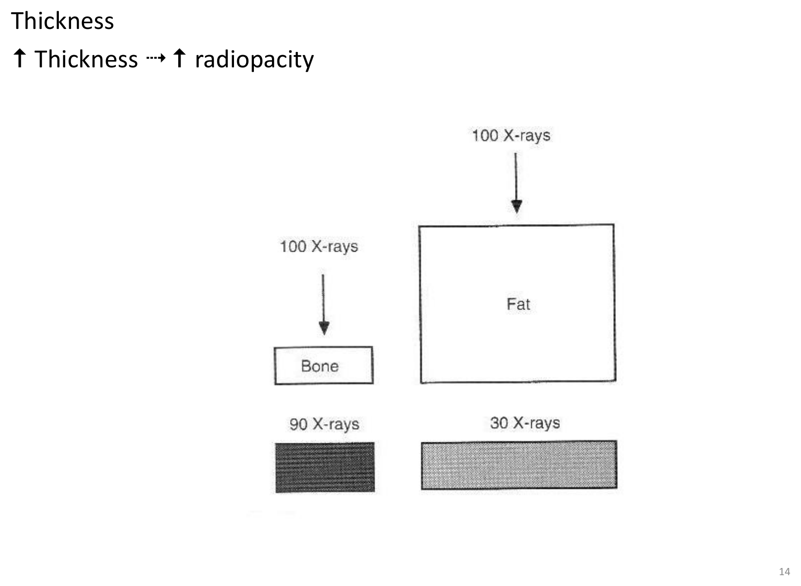
X光束能量與 kVp／mAs 的選擇重要
kVp＝X光能量：
- kVp太低 → 太少X光穿透病患 → 底片曝光不足（underexposed）
- kVp太高 → 太多X光穿透病患 → 底片曝光過度（overexposed）
如何選擇kVp與mAs：依身體部位（例：胸腔 vs. 腹腔厚度與組織特性不同）與病患特性（例：是否有運動，運動中的部位需縮短曝光時間避免影像模糊）決定。
胸腔宜用較高的kVp，才能有足夠穿透力呈現肺野內的細節，包含肺血管紋理等構造的狀況（kVp太低時穿透力不足，這些細微對比會被犧牲、看不清楚）；mAs則宜盡量低——因為胸腔會隨呼吸與心跳持續運動，mAs越低代表曝光時間越短（mAs＝mA×時間），才能「凍結」這個生理性運動、避免因病患移動造成的影像模糊（motion blur）。這是高kVp、低mAs的組合在胸腔攝影上特別重要的原因，與腹腔等相對靜止部位的曝光條件選擇邏輯不同。
二維影像的先天限制 Consequences of Radiographs Being Two Dimensional
X光片把三維立體結構壓縮成二維影像，這個壓縮過程必然帶來五種特定的判讀陷阱，是臨床判讀X光片前務必內化的思維框架。
放大與變形 Magnification and Distortion重要
↑物體與底片間距離（object-film distance）→ ↑放大率（magnification）。臨床原則：感興趣部位應盡量靠近底片（cassette）擺放，以避免放大失真。
肺部病灶的邊界可能被萎陷、依賴側（atelectatic dependent）的肺組織掩蓋（輪廓消失效應），此時病灶實際邊界的判讀需特別謹慎，不能單純套用「越靠近底片越準確」的原則。
拍攝胸腔務必等病患吸飽氣（full inspiration）後才按下曝光鍵：肺泡未充分擴張時含氣量不足，一個例如1×1大小的小腫塊，若周圍是塌陷（collapsed）而非充分擴張的肺泡，塌陷肺泡的不透光度會與腫塊接近，使腫塊邊界被掩蓋、無法辨識；只有吸飽氣、肺泡完全展開含氣，病灶與周圍正常含氣肺組織之間才會有足夠的不透光度差異，呈現出應有的細節（detail）與清楚邊界。這也是「輪廓消失效應」在胸腔攝影上最常見的實際應用情境。
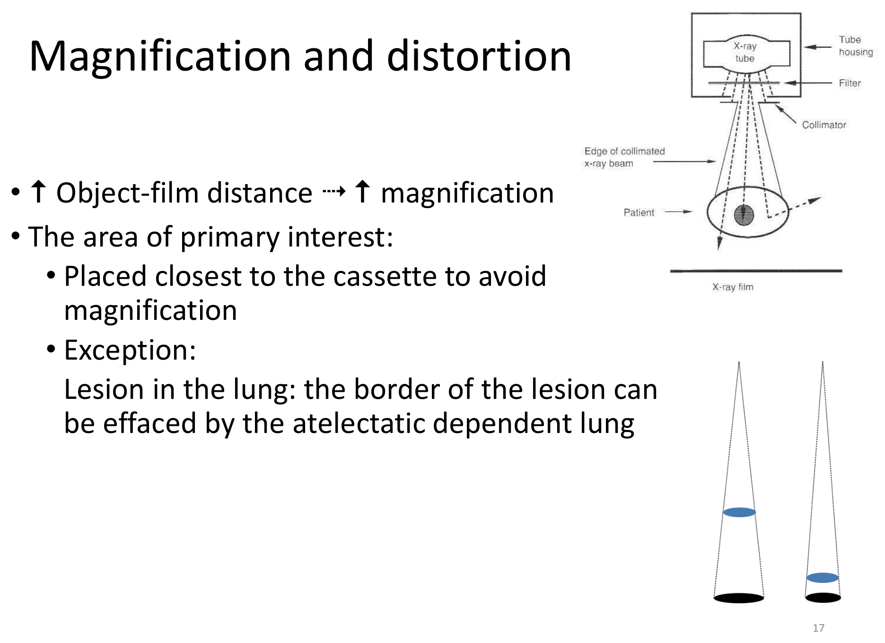
變形 Distortion
同一物體不同部位的放大率不均等，常因肢體或構造與底片的角度／距離不一致所致。
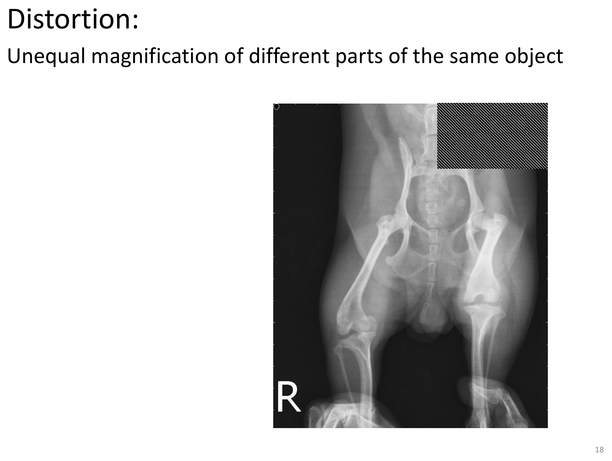
不熟悉的影像 Unfamiliar Image
X光片是三維構造去除深度資訊後的二維疊加投影，初學者常因這種「壓平」後的影像型態感到陌生、難以對應到熟悉的解剖構造。
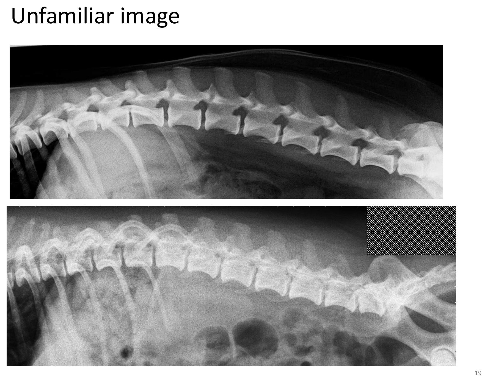
失去深度感 Loss of Depth Perception
二維影像無法呈現構造的前後（深度）位置關係，同一個病灶在單一投照方向上可能對應多個不同的實際解剖位置，必須搭配互相垂直的第二個投照方向才能定位。
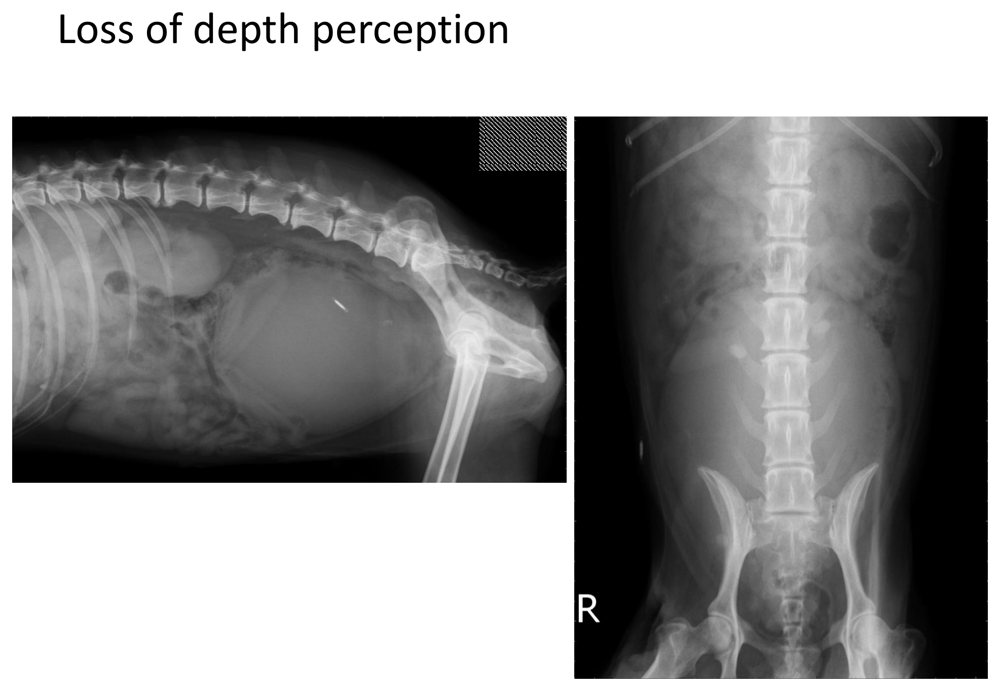
疊加訊號 Summation Sign重要
影像上任一點的不透光度，反映的是該路徑上所有被疊加（superimposed）構造的X光吸收總和。
疊加的構造使該區域不透光度增加（更白）
疊加的構造（如含氣構造）使該區域不透光度降低（更黑）
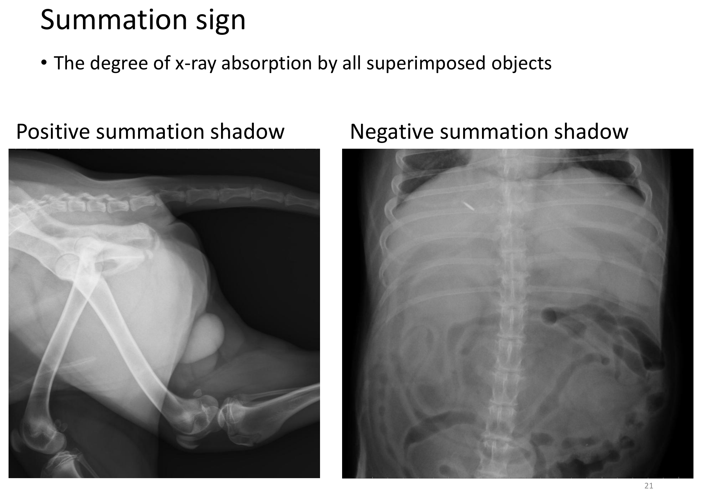
輪廓消失效應 Silhouette Effect / Border Effacement重要
當兩個不透光度相同的構造互相接觸時，因兩者交界處缺乏對比差異，導致無法區分彼此的邊界（border effacement）；反之，若兩個相同不透光度的構造被另一種不同不透光度的物質分隔，則它們的邊界在X光片上可以被辨識。
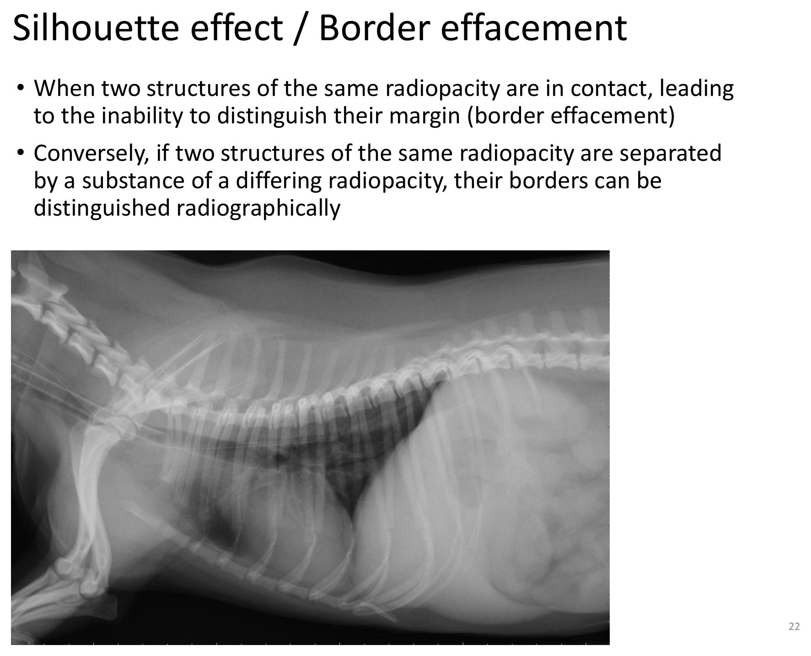
攝影投照與擺位 Radiographic Projections and Positioning
投照方向的命名邏輯與標準化的解剖學方位術語，是臨床上與同事溝通「這張片子怎麼拍的」的共同語言。
解剖學方位術語重要
描述投照方向與病灶位置前，需先統一動物解剖學的方位術語——頭部用rostral／caudal，軀幹用cranial／caudal，背腹向用dorsal／ventral，前肢遠端掌側用palmar、後肢遠端蹠側用plantar，肢體近遠端用proximal／distal。
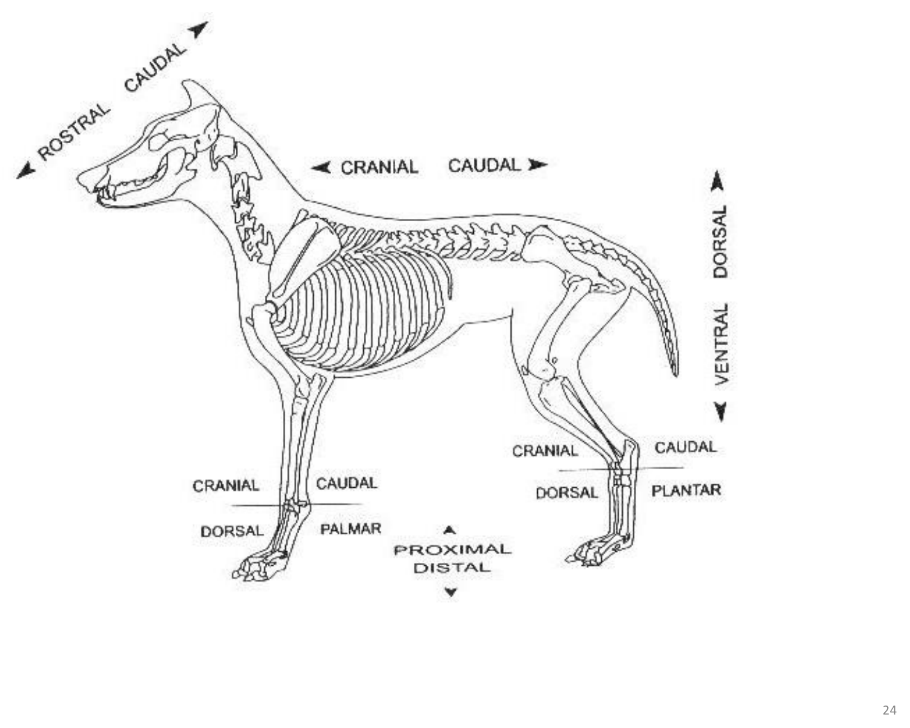
DV／VD 投照重要
投照方向依X光束穿透身體部位的方向命名，從進入點（point-of-entrance）到穿出點（point-of-exit）：
X光由背側射入、腹側穿出；動物採腹側臥（ventral recumbency）
X光由腹側射入、背側穿出；動物採背側臥（dorsal recumbency）
CrCd／CdCr 投照
X光由顱側／前方射入、尾側／後方穿出
X光由尾側／後方射入、顱側／前方穿出
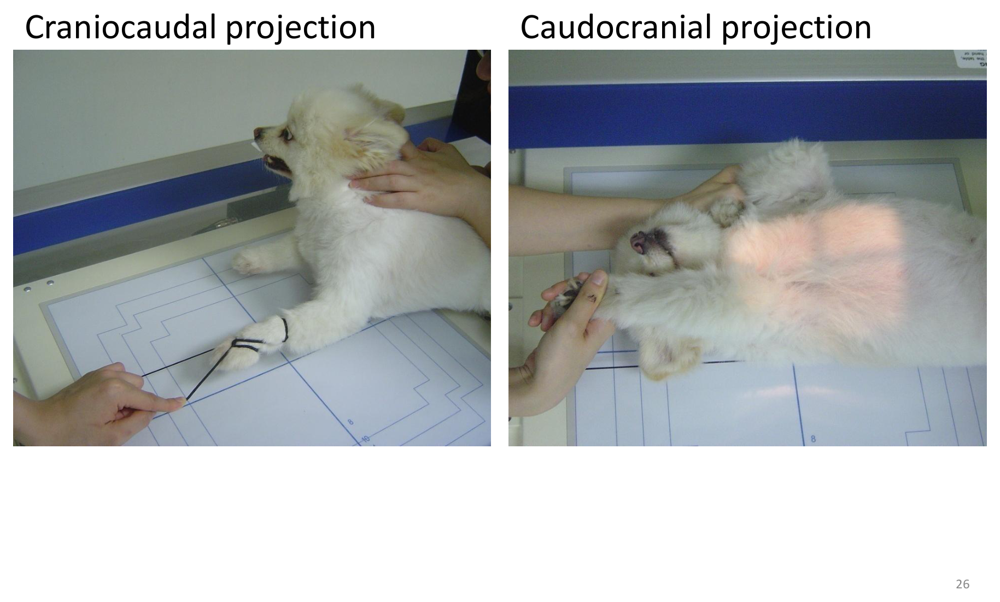
外側位投照 Lateral Projections重要
腹腔與胸腔的外側位放射影像，依病患躺臥在X光檯上的側邊（recumbency）命名；若為站立病患，則依靠近底片的那一側命名：
動物採右側臥（right recumbency）
動物採左側臥（left recumbency）
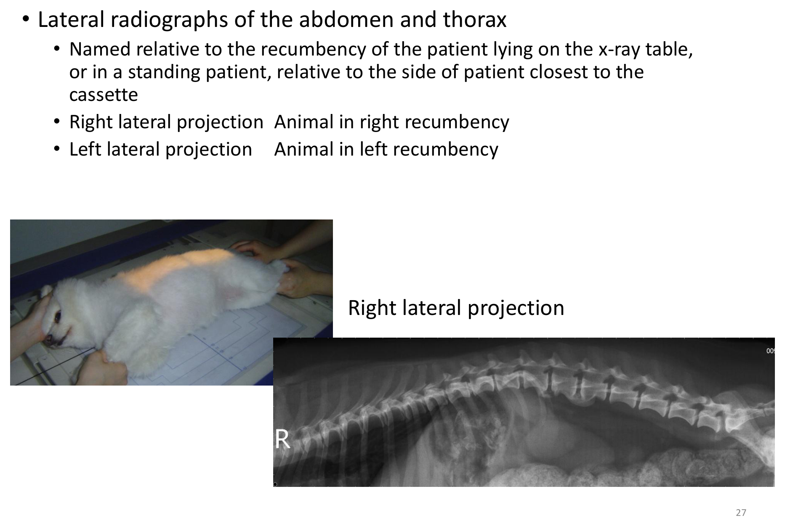
外側位擺位時，靠近檯面的一側（依賴側，dependent side）因體重壓迫與通氣較差，肺泡容易部分塌陷、含氣量降低；相對地，朝上、遠離檯面的一側（非依賴側，non-dependent side）肺葉擴張較完全、含氣量較佳，影像細節也較清楚。因此若想仔細觀察左側肺葉，應讓病患採右側臥（right recumbency），使左側肺葉位於上方（非依賴側）、不被壓在下面而部分塌陷；反之想看右側肺葉則採左側臥。臨床上懷疑單側肺部病灶（如轉移性腫瘤結節）時，這個「哪一側肺要看清楚就讓哪一側朝上」的原則，與前段「拍胸腔務必吸飽氣」的道理相同——都是在確保感興趣的肺組織有足夠含氣量，才能呈現正確的病灶細節與邊界。
其他投照方向
除上述基本投照外，依不同身體部位還有許多專用投照方向，例：顳顎關節（TMJ）、鼓室泡（tympanic bulla）、額竇（frontal sinus）、髖關節（hip）、脊椎（spine）等，各自有特定的擺位技巧。
標準擺位的重要性重要
擺位不標準（如VD投照時脊椎歪斜、未對稱）會直接影響影像判讀的準確性：脊椎偏離身體中線會使左右兩側胸腔結構呈現不對稱的假性病變，心臟輪廓也可能因體位旋轉而失真變形。
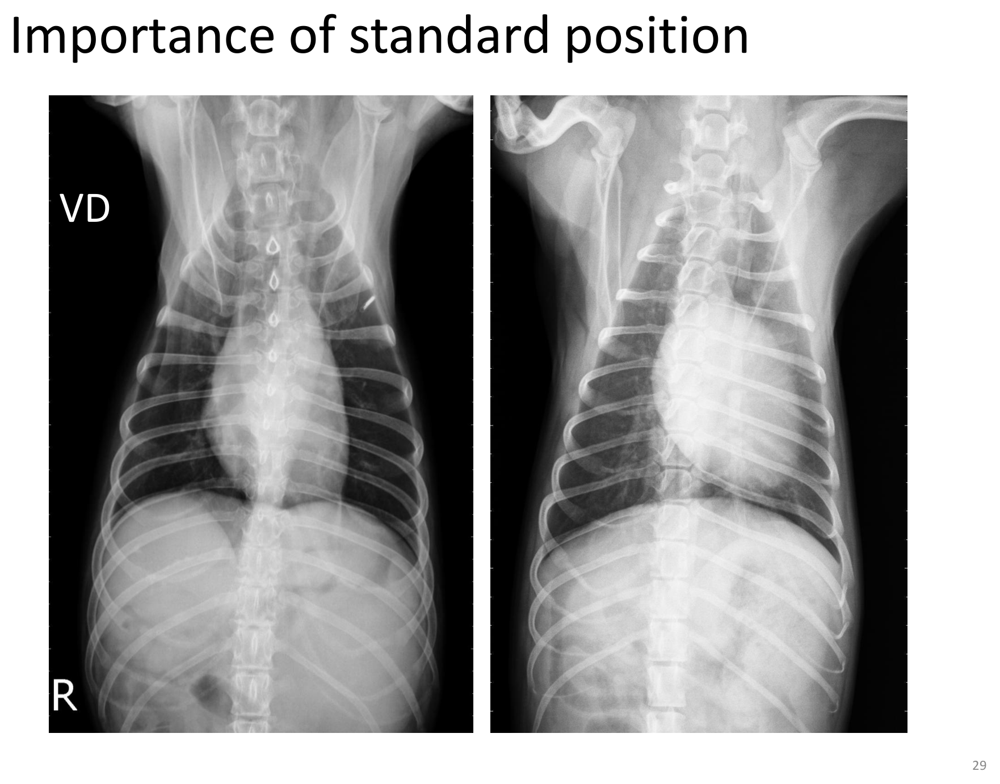
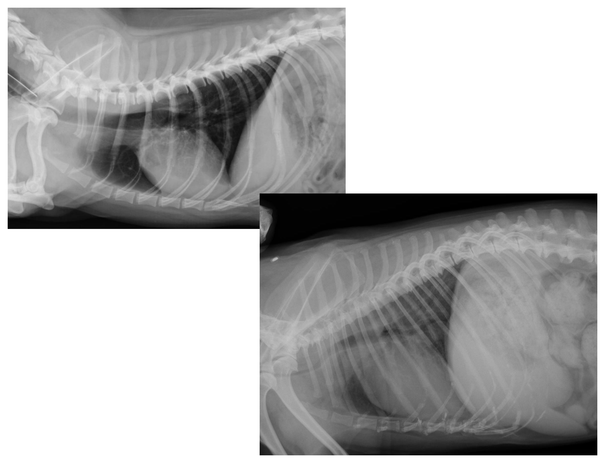
攝影流程 Procedures of Taking a Radiograph
從選定部位到按下曝光鍵之間，有一套固定的檢查流程，核心精神是「排除一切會干擾判讀的因素」。
- 外部物體：項圈、氣管內管、監測設備、手指等
- 病患自身構造：肢體、肩胛骨、皮膚皺褶等
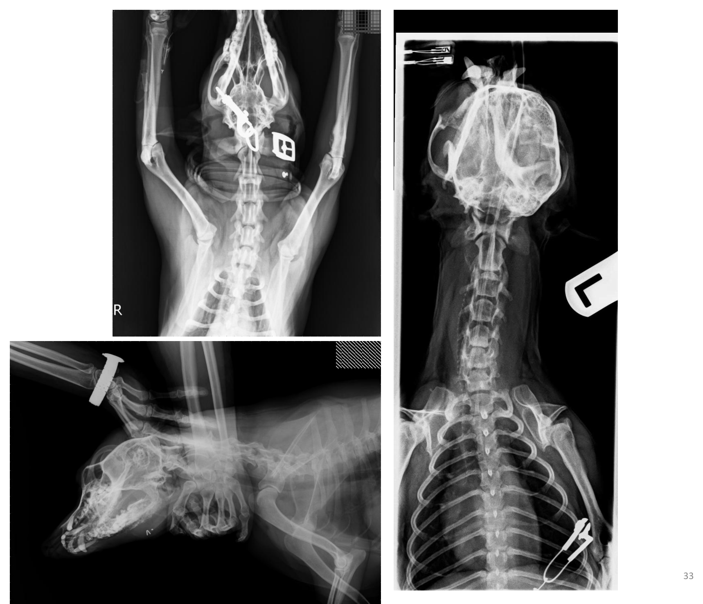
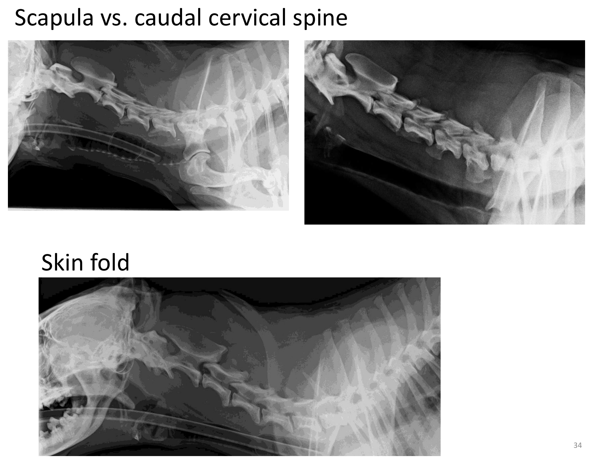
- 化學保定：鎮靜（sedation）、全身麻醉（general anesthesia）
- 機械式保定裝置：沙袋（sandbag）、泡棉墊（foam cushion）、膠帶（tape）、繩索（rope）
學習重點整理
考試最愛出「機轉配對」「二維限制辨識」「投照方向命名」三種題型，複習前先快速掃過本節。
練習題 Practice Quiz
涵蓋X光產生機轉、光電效應、對比度因素、二維限制、投照方向命名各章節重點，最後一題為臨床情境整合題，先自己作答再點「顯示答案」核對。
光電吸收與光子能量的三次方成反比（∝1/E³），kVp越高代表X光能量越高，光電吸收會隨之減少，使組織間因吸收差異形成的對比度降低；同時因穿透力增強，太多X光穿透病患打到底片，可能導致影像曝光過度（overexposed）。
體液（血液、尿液、膽汁、CSF、滲出液、漏出液）與軟組織（軟骨、肌肉、筋膜、肌腱、韌帶、器官）的物理密度與原子序彼此相近，在X光片上呈現相似的「軟組織不透光度」，無法單靠X光片的不透光度互相區分，需要搭配超音波等其他影像工具進一步鑑別。
疊加訊號（summation sign）反映的是該路徑上所有被疊加構造的X光吸收總和；當疊加的構造（如骨骼）使該區域不透光度增加，稱為正向疊加訊號。輪廓消失效應指的是相同不透光度構造相接觸時邊界無法辨識，與本題描述的「不透光度增加」不同。
X光片是將三維立體構造壓縮成二維影像的投影結果，這個壓縮過程會造成「失去深度感」——單一投照方向上，某個構造或病灶的前後（深度）位置無法被判斷，因為沿著X光路徑上所有被疊加的構造都會呈現在同一個二維平面上，觀察者無法單憑一張影像分辨病灶究竟位於身體的前側、後側或中間。只有搭配另一個互相垂直（90度）的投照方向，才能透過兩個不同角度的資訊互相對照，重建出病灶在三維空間中的實際相對位置，這也是「至少兩個互相垂直投照方向」成為臨床攝影標準流程的核心原因。
(1) 判讀陷阱：①擺位不標準造成的失真：脊椎偏離影像中線代表病患在VD擺位時身體有旋轉，並非真正躺平對稱，這會導致心臟與胸腔兩側結構的相對位置改變，心臟輪廓可能因此呈現假性擴大或形狀不對稱，並非真正的心臟病變；②外部物體重疊干擾：項圈與心電圖監測導線若與胸腔感興趣區域重疊，可能被誤判為病灶（如結節狀不透光構造）或掩蓋真正存在的病變，干擾判讀準確性。
(2) 改善方式：應重新擺位，確保病患背側正躺、脊椎位於影像正中央、兩側胸廓對稱後再曝光，必要時使用泡棉墊或沙袋等機械式保定裝置維持標準姿勢；曝光前應移除項圈，並盡量將心電圖監測導線移出感興趣的胸腔投照範圍之外，或至少調整導線走向使其不與胸腔臟器重疊，才能拍出足以正確判讀心臟與肺野的合格影像。